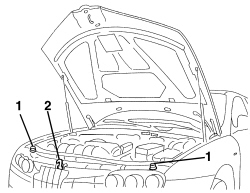
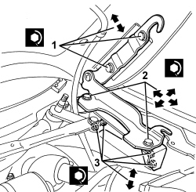

7025A10 BONNET LID - ALIGNMENT
- Path
- Procedures > 70 FITTINGS > 7025 COMPARTMENT COVERS > 7025A BONNET LID > 7025A10 BONNET LID - ALIGNMENT
- Kind
- repair procedure (removal / refitting; the operation number is the code)
- Applies to
- all engines; all production periods
- Interactive page
- https://sloeber94.github.io/elrnDB/#/939004932
Applies to: all engines; all production periods
- Open the bonnet.
1. Check that the self-adjusting buffers are working properly.
Replace them if necessary.
Op. 7025A15 BONNET LID SELF-ADJUSTING BUFFERS - R.R.
2. If necessary, adjust the position of the lock.
Op. 7025A34 BONNET LID LOCK (ONE) - R+R OR REPAIR

Applies to: all engines; all production periods
- If the adjustments indicated in the previous points are insufficient, adjust the position of the bonnet hinges as described below.
1. Working from both sides of the vehicle, loosen the bonnet lid bolts and adjust the lid position using the slotted holes in the hinges.
After adjustment, tighten the bolts to the specified torque.
Component | Fastening | dia | Value (daNm) | Validity |
|---|---|---|---|---|
BONNET | Bolt | M8x20 | 2.2 ÷ 2.6 |
2. If necessary, working from both sides of the vehicle, loosen the lid bolts and adjust the lid position using the slotted holes in the hinges.
After adjustment, tighten the bolts to the specified torque.
Component | Fastening | dia | Value (daNm) | Validity |
|---|---|---|---|---|
BONNET HINGES | Bolt | M8x25 | 2.2 ÷ 2.6 |
3. If necessary. Adjust the hinge mounts as follows.
Op. 7210E22 R.R. WINDSCREEN BASE TRIM
- Working from both sides of the vehicle, bolts attaching the hinges to the body and adjust the lid position using the slotted holes in the hinges.
After adjustment, tighten the bolts to the specified torque.
Component | Fastening | dia | Value (daNm) | Validity |
|---|---|---|---|---|
BONNET HINGE BRACKET | Bolt | M6 | 0.8 ÷ 1.0 |

Applies to: all engines; all production periods
- If necessary, adjust the position of the lock.
Topics linked from this page (3)
- 7025A15 BONNET LID SELF-ADJUSTING BUFFERS - R.R.
- 7025A34 BONNET LID LOCK (ONE) - R+R OR REPAIR
- 7210E22 R.R. WINDSCREEN BASE TRIM